ToDo
Zeitplan
FahrtSt. Johann in Tirol → Bartholomä · 312 km · reine Fahrzeit 3 h 24
Abfahrt 07:15, Ankunft 11:00 — 2 h Luft bis Beginn 13:00. Fahrer Florian Kaufmann. Reisekosten mit dem Kunden vereinbart: 400 € (WhatsApp Daniel, 06.10.).
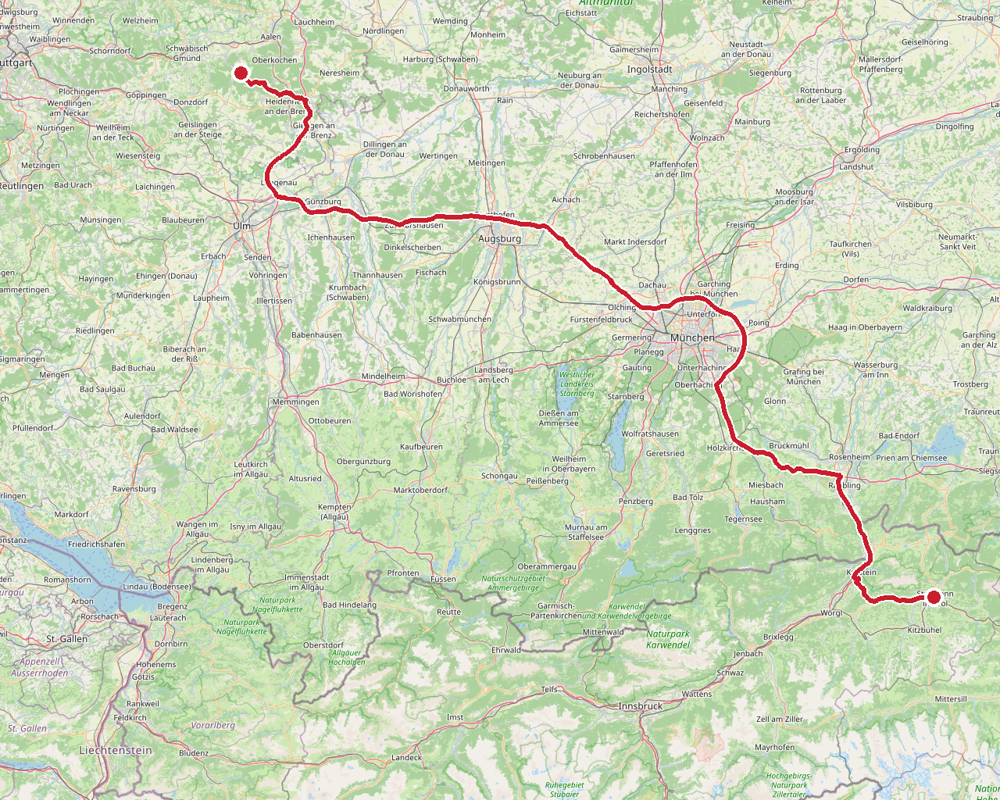
ChristophHarro Höfliger — Workshop Marketing-Team, ca. 4 h
Location in Bartholomä noch unbekannt. Publikum laut Kennenlern-Call 06.10.: die interne Marketing-Agentur, „so eine Marketingabteilung mit 22 Leuten", Alter „von 60 bis mittel 20". Termin wiederkehrend: „letztes Jahr war es Dienstag". „wenn wir um 13 Uhr anfangen würden, müssten Sie um 17 Uhr gehen."
| Auftrag | „Den Impuls zu setzen, dass die KI für jeden Einzelnen eine Chance darstellt" · „Da sind vereinzelt schon noch Ängste in den Köpfen, vor allem dann auch bei ein bisschen älteren Teammitgliedern." · „Also KI als Bereicherung unserer Arbeit." |
| 2000 Co-Kreatoren | Interne Kunden kommen mit KI-Entwürfen: „guck mal, was ich da schön in der KI erstellt habe, könnt ihr das nicht so machen." · „Also potenziell haben wir 2000 Co-Kreatoren." Auf deine Frage, was fehlt: „Umgang mit unseren 2000 Co-Kreatoren. Weil das sorgt aktuell immer für Reibungsdruck." |
| KI-Stand | „Also wir nutzen KI schon, aber bei weitem nicht das volle Potenzial." Microsoft-Umfeld: „müssen wir uns halt des Co-Pilots bedienen". Agenten baut nur ein zentrales KI-Core-Team. Routinen: „Listen, führen, Listen ergänzen", E-Mails „vorsortieren, beantworten". Gefunden haben sie dich über Copilot. |
| Marketing | Keine Lead-Generierung, sondern „Reputationsmanagement", vor allem Messen und Events. Vertrieb und Personalmarketing „fast eine 50-50-Gewichtung". GEO schwierig: das Portfolio sei „dazu angetan, die LLMs ein bisschen zu verwirren". Webseiten-Dienstleister wird gerade gewechselt. |
| Organisation | „es wird einen Führungswechsel geben … ab 2028". Frage, wie sich die Agentur künftig aufstellt. Homeoffice 60/40. |
| Deine Zusage | Keine Übungen, „ich würde mich auf die Gedankenexperimente stürzen". Themen per Abstimmung: Agenten, GEO, Grenzen neuronaler Netze, Halluzinationen, KI-fähige Corporate Identity, Fertigung der Zukunft. |
Daniel hat am 28.10. Leitbild und Führungsgrundsätze geschickt — von dir im Call erbeten.
| Unternehmen | Familienunternehmen, gegründet 1975, Sitz Allmersbach im Tal. Sondermaschinenbau für Pharma, Medizintechnik und Konsumgüter. Claim „ALL YOU NEED". Purpose: „Wir liefern zukunftsfähige Technologien und leisten damit einen Beitrag für die Gesundheit von Millionen Menschen." |
| Zahlen | Umsatz 2025: 480 Mio. €, Plan 2026: 520 Mio. € · 2.450 Mitarbeitende 2025, Plan 2026: 2.650 |
| Märkte | Europa 46 % · Nordamerika 28 % · China 14 % · Emerging Markets 12 % |
| Aufträge | Plattformmaschinen 51 % · Standardmaschinen 19 % · Customer Service 14 % · Prototypen 13 % · Dienstleistungen 4 % |
| Personal | Konstruktion und Steuerungstechnik 32 % · Produktion und Materialwirtschaft 29 % · Kaufmännisch 12 % · Pharma/Device/Customer Services 11 % · Vertrieb und Projektmanagement 10 % · Azubis und Studierende 6 % |
| Standorte | Allmersbach (Parenteral Device Assembly, Pharma) · Aspach (Fertigung, Logistik) · Backnang · Oppenweiler · Satteldorf · Schlierbach · neu: Debrecen/Ungarn (Ende 2025) · Bangalore/Indien (110 Mitarbeitende) |
| Gründer | Harro Höfliger, 1937–2019: „Wir sind und bleiben: Ein zukunftssicheres Familienunternehmen – attraktiv für Mitarbeitende und Partner." |
| Aktuell | 50-Jahre-Jubiläum 2025, Motto „Future since 1975". Kooperation mit dem Fraunhofer IPT zur automatisierten Produktion von Zell- und Gentherapien. |
Geschäftsführung
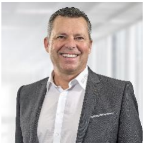 | Thomas Weller · CEO |
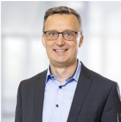 | Marco Laackmann · CSO |
| Timo Graf · CTO | |
| Alexander Herb · CFO | |
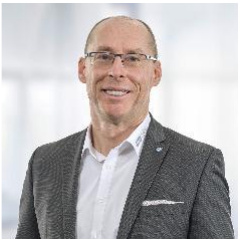 | Thomas Heckner · COO |
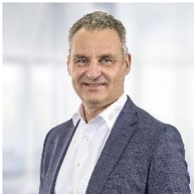 | Uwe Amann · CHRO |
Aufsichtsrat: Markus Höfliger (Vorsitz) · Hartmut Jenner (Vorstandsvorsitzender Kärcher) · Siegfried Drost (ehem. GF Uhlmann). Quelle: Company Profile vom 06.10.2026.
FehltNamen der Ansprechpartner. Im Call: Marketing-Leitung plus Kollege; Daniel ist Ansprechpartner für Honorar und Reisekosten.
FahrtBartholomä → Münster · 542 km · reine Fahrzeit 5 h 28
Weiter zum KI-Tag der DRV Westfalen. Hotel Kaiserhof Münster gebucht — Details auf der DRV-Seite.

Vorbereitung Workshop — Unterlagen vom 28.10.
Leitbild (Aufl. 5, 06.2026) — von dir im Call erbeten
| Mission | „ALL YOU NEED" — „wirkt aber auch nach innen und gibt uns den Handlungsrahmen" |
| Fünf Grundsätze |
|
| Werte |
|
| Anknüpfung KI | „Wir verkaufen nicht Maschinen, sondern Lösungen." · „Scheinbar Unmögliches machen wir möglich." · „Kreativität und Ideen sind gefragt und werden gefördert." · Vorwort Markus Höfliger: „stellen den Menschen in den Mittelpunkt" |
Führungsgrundsätze (Aufl. 3, 04.2024, Vorwort Uwe Amann, CHRO)
| Fünf Sätze |
|
| Anknüpfung KI |
|
Kundenmagazin HARRO 15 (Jubiläum „Future since 1975")
| CEO Weller zu Trends | Märkte „werden zunehmend von Digitalisierung, KI und dem Wunsch nach Flexibilität geprägt." |
| Harro Digital | Produkte, „die aus Maschinendaten konkrete Handlungsempfehlungen generieren." Digitaler Zwilling testet Effizienz „schon vor der Bauteilfertigung". |
| Philosophie | „Das Produkt bestimmt den Prozess." · „Natürlich bauen wir Maschinen, aber das können viele." |
| Zukunftsfelder |
|
| Redaktion | Rosemarie Christ, Michael Waghubinger — vermutlich aus dem Marketing-Team im Saal. Abgleich mit den Namen aus dem Call offen. |
Historie des Auftrags
| 05.10.2026 | Daniel per WhatsApp: „morgen 09:00 Uhr bitte Kennenlern-Call mit Firma Harro Höfliger, eine Anfrage für 2.11." Termin im Speaker-Kalender. |
| 06.10.2026 | Kennenlern-Call 09:00, Sprachmemo 45 Min. Marketing-Team, 4-h-Workshop am Montagnachmittag, danach Weiterfahrt nach Münster. |
| 06.10.2026 | Daniel: „wollen wir st. johann nach bartholomä mit Reisekosten von € 400,- machen?" |
| 08.10.2026 | Daniel: „von Harro Höfliger haben wir für den 2.11. den Zuschlag erhalten." |
| 13.10.2026 | Eintrag „Kunde", 02.11. 13:00–17:00, im Speaker-Kalender. |
| 28.10.2026 | Daniel schickt Firmeninfos: Company Profile, Leitbild, Führungsgrundsätze, Kundenmagazin HARRO 15. |
Recherche: Fallbeispiele für das Marketing-Team
Jeder Fall in vier Sätzen: Ausgangslage · was passiert ist · Ergebnis · warum es zählt. Darunter die Belege zum Kopieren: Screenshot (1600 × 1000, fremdsprachige Seiten ins Deutsche übersetzt, Cookie-Banner entfernt) und Titelbild. Klick vergrößert, ‹ › oder Pfeiltasten schalten weiter, Rechtsklick → „Bild kopieren“.
Wacom — KI-Bilder in der eigenen Werbung
Ausgangslage: Grafiktablett-Hersteller nutzte in einer Neujahrskampagne KI-generierte Bilder.
Was passiert ist: Ausgerechnet die Kundschaft (Illustratoren) entdeckte es; Wacom schob es auf einen Zulieferer.
Warum es zählt: Dein Thema „2000 Co-Kreatoren“: Wenn interne Kunden KI-Entwürfe mitbringen, haftet am Ende die Marke. Prüfen bleibt Aufgabe des Marketings.
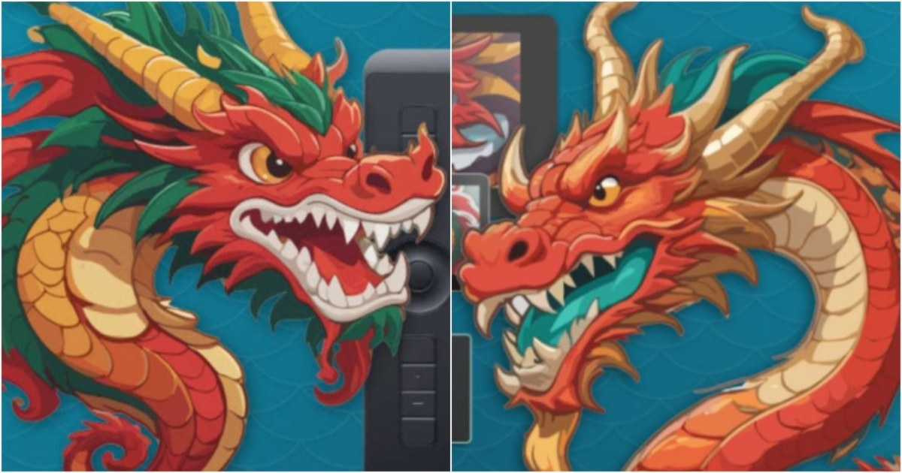
Meta tauscht Anzeige ohne Freigabe — Loeb & Loeb
Ausgangslage: Metas Werbeplattform ersetzte bei der Modemarke True Classic eine erfolgreiche Anzeige automatisch durch ein KI-Bild.
Was passiert ist: Die Marke hatte nichts freigegeben.
Warum es zählt: Agenten auf der Plattformseite greifen in deine Marke ein — Thema Agenten und KI-fähige Corporate Identity.
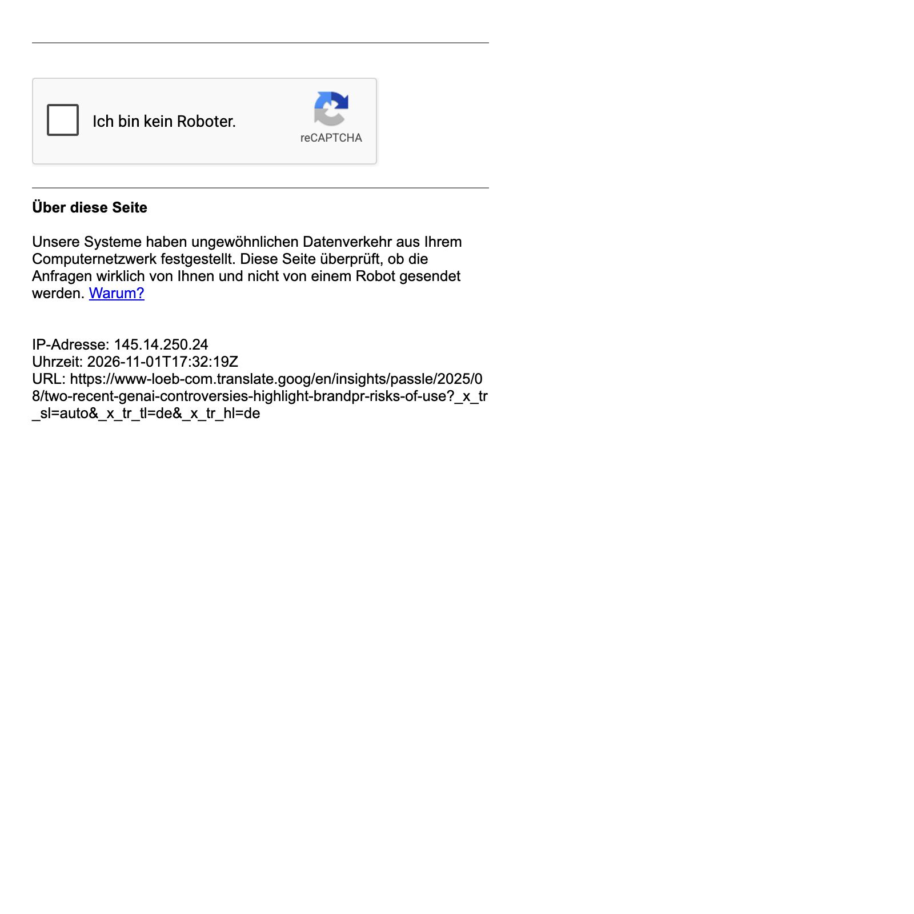
Air Canada — der Chatbot ist keine eigene Person
Ausgangslage: Chatbot versprach einem Kunden nachträglichen Trauerfall-Tarif — falsch.
Was passiert ist: Air Canada argumentierte, der Bot sei für seine Aussagen selbst verantwortlich.
Ergebnis: Tribunal 2024: Die Airline haftet für alles auf ihrer Website.
Warum es zählt: Halluzination mit Folgen: Was ein KI-Tool im Namen von Harro sagt, sagt Harro.
Trendbarometer Industriekommunikation 2026
Ausgangslage: bvik-Umfrage unter 282 Verantwortlichen aus Industrie und Agenturen.
Was passiert ist: 86 % halten Generative Engine Optimization für Pflicht — Umsetzung hinkt hinterher.
Warum es zählt: Euer GEO-Problem aus dem Call („das Portfolio verwirrt die LLMs“) ist Branchenthema Nummer eins.
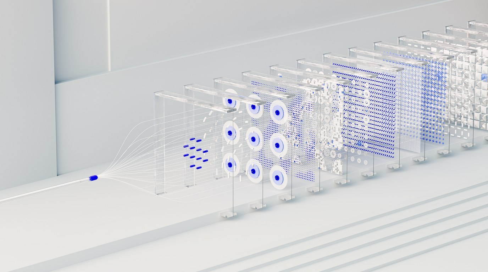
bvik auf der OMR 2026 — Industriemarken zeigen KI-Praxis
Ausgangslage: Masterclass mit Schunk, Wienerberger, Still und Phoenix Contact.
Was passiert ist: 78,8 % der Marketingverantwortlichen investieren in KI.
Warum es zählt: Vergleichbare Industriemarken aus dem Mittelstand — Benchmark für das Harro-Marketing.
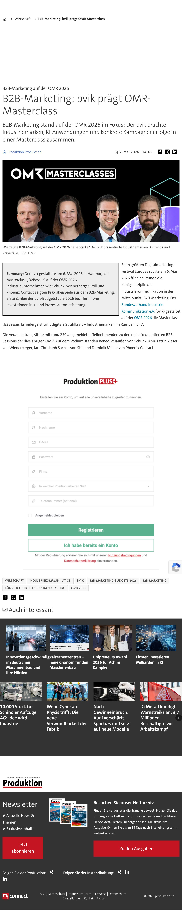
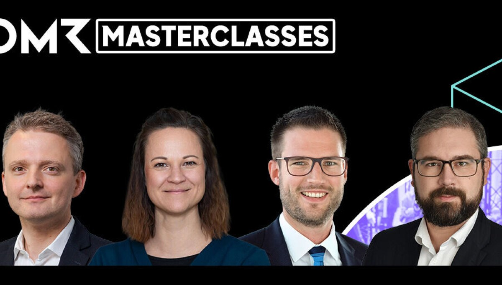
VDMA — 43 % der Maschinenbauer nutzen KI produktiv
Ausgangslage: Anwendungen: Predictive Maintenance, Wissensmanagement, generative Produktentwicklung.
Warum es zählt: Brücke zu Harro Digital und dem digitalen Zwilling aus HARRO 15: Das Marketing verkauft bald KI-Produkte.
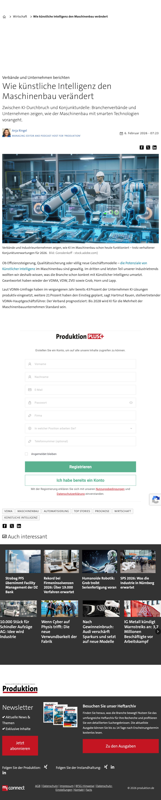
Transkript Kennenlern-Call 06.10.2026
Bereinigt: Zeitmarken zu Absätzen zusammengefasst, Füllwörter und Wortdoppelungen entfernt. Wortlaut sonst unverändert, keine Sprecherzuordnung.
Transkript aufklappen (40 Absätze)
[00:00] zwischen 20 und 30 Millionen gehen. Und wir sind auch viele Jahre mit unseren Kunden gewachsen. Das heißt, was bei uns nicht im Vordergrund steht, ist das Thema Lead-Generierung. Sondern bei uns ist sicherlich im Marketing-Gesamt ein großes Thema. Das, was wir Reputationsmanagement nennen, also Kundenbindung, dem Kunden immer wieder die Gewissheit zu geben, dass er mit uns einen richtigen Partner hat. Und es äußert sich darin, dass wir sehr viel Wert legen auf persönliche Kontakte von den Kunden und unseren Ansprechpartnern im Vertrieb. Und diese persönlichen Kontakte finden sehr viel auf Messen, Events, Konferenzen, Symposien. Also auch, so geht es schon ein bisschen in Richtung Wissenschaft statt. Und das ist ein ganz großes Element, ein ganz großes Kuchenstück unseres gesamten Marketing-Mixes.
[01:07] Also Messen und Veranstaltungen. Was dazu kommt, sind eine ganze Reihe interner Kunden. Zum Beispiel ein betreuter Kollege, also Sven, die unseren Human Resources Bereich, wo wir letztlich alle Maßnahmen, die zur Mitarbeitergewinnung und Mitarbeiterbindung dienen, bei uns laufen. Und ansonsten, ein dritter großer Bereich, oder der Bereich, der gerade größer wird, ist die Betreuung und Zusammenarbeit mit unseren Auslandsgesellschaften, die mehr und mehr Verantwortung für ihre regionalen Märkte übernehmen. Und die wir da begleiten und mit ihnen zusammen, das ist je nach Region ganz unterschiedlich, die Möglichkeiten suchen. Und sie dabei unterstützen, die Marktpotenziale, diese Seelen vor Ort dann auch zu erschließen.
[02:12] Also ich habe das einmal gegenüber einem anderen Kollegen so genannt. Vielleicht kann man es ein bisschen in die Richtung als Bild fassen, dass wir sehr individuell, also eigentlich sowas wie Account-Based Management machen, aber nicht mit, aufgrund der Größe der verschiedenen Zielgruppen, der verschiedenen Marktsegmente, nicht mit sehr vielen Tools, die das Ganze automatisiert abbilden, sondern so ein bisschen händisch, manuell, sehr individuell auf das einzelne Projekt und auf die einzelne Situation angepasst. Okay, sehr spannend. Also eine interne Agentur, Sie haben genannt. Ja, wir haben auch alle Kernkompetenzen, die so eine klassische Laube-Agentur hat, haben wir im Haus. Also das, was man auch in Kreation sieht, das, was wir publizieren, kommt zum allergrößten Teil aus der eigenen Küche.
[03:17] Okay, cool. Gut, sehr spannend. Also ich bin ja vom Studium her Informatiker und Maschinenbauer. Das ist mein... Genau Maschinenbau. Ja, also in diesem Spannungsfeld. Und jetzt ist, oder, die Welt, jetzt kommt die künstliche Intelligenz und wir wissen ja nicht so wirklich, wie wird die unsere Gesellschaft verändern, wie wird die unsere Arbeit verändern. Wir haben zum ersten Mal ein Werkzeug mit der künstlichen Intelligenz, das die Transformation erleichtert. Die Dampfmaschine war nicht in der Lage, ihren Bedienern zu erklären, was sie eigentlich ist und wie man sie bedienen soll. Also wir bekommen jetzt eine viel schnellere Transformation, die sich aber selbst erklärt. Das ist das Faszinierende daran und manche sagen ja, dass sie uns die Arbeit wegnimmt. Sie nimmt aber nur Tätigkeiten weg, deren Würde sowieso schon fraglich ist. Der James Taylor in der Fabrik von Ford hat ja genau jede Tätigkeit gemessen, aber Arbeit ist das, was zwischen den Tätigkeiten stattfindet.
[04:22] Und das ist bei Ihnen ein recht großer Teil, das ist die Beziehung. In der künstlichen Welt ist nichts wichtiger als die menschliche Beziehung. Wichtig ist nur, dass ich mich freizuschaufeln beginne von den Dingen, die mir Zeit rauben, von den Dingen, die ich eben nicht in der Beziehungsarbeit einsetzen kann. Und ich bin da selber relativ weit schon, was künstliche Intelligenz betrifft. Das heißt, ich bereite Meetings, ich bereite meine Vorträge bereits vor im Dialog mit einer KI. Die macht die ganze Recherche für mich und stellt mir dann im Dialog mit mir ein Dossier zusammen, sodass ich eben auch für jeden meiner Kunden, die will ich ja auch persönlich betreuen, für jeden meiner Kunden auch weiß, wo sind denn eigentlich die Sorgen, was sind die Trends, was sind die Möglichkeiten, was macht die Konkurrenz. So gut vorbereitet, wie ich heute in Kundentermine gehe, war ich noch nie. Weil diese Breite, das schaffen eben meine Agenten, die auch noch am Vortag gucken, gibt es vielleicht eine Krise.
[05:30] Es wäre gut, wenn man Fettnäpfchen vermeidet. Auch mir hilft zu verstehen, in ihrem Fall wäre ein schöner Anwendungsbereich auch zu verstehen, wenn sich bei ihren Kunden was ändert. Das kriegt man vielleicht nicht mit, aber der freut sich natürlich, wenn man ihn dazu gratuliert oder wenn man sagt, wie können wir euch dort unterstützen. Und da ist künstliche Intelligenz in der Beziehungsarbeit ermöglicht, eine ungeheure Breite. Und ich könnte mir nach dem, was Sie gesagt haben, ganz gut vorstellen, dass es eben nicht um agentenbasiertes Marketing geht. Da durfte ich bei der großen Konferenz heuer die Keynote halten. Also nicht um die Automatisierung von Massenkunden, sondern Sie haben ja gesagt, es sind Investitionsgüter. Da muss man wahrscheinlich schon mal ein paar Millionen in die Hand nehmen. Und da möchte man auch einen Haftungspartner. Und da möchte man jemanden, auf den man sich verlassen kann.
[06:31] Und Vertrauensarbeit steht da, könnte ich mir vorstellen, im Mittelpunkt. Und die will halt gut informiert sein. Also da kann man gut auf künstliche Intelligenz setzen, aber Sie brauchen keine AdWords-Kampagnen, Sie brauchen keine autonome Lead-Generierung. Solche Dinge setze ich natürlich für mich ein. Für mich macht das Sinn. In Ihrem Fall ist es einfach wichtig, dass der Kunde auch, Sie haben ja es im Vorfeld mit Kunden zu tun. Also ich würde, naja, wenn ihr zur Hypothese, vermutlich kennen Sie die meisten Ihrer Kunden bereits und es sind im Normalfall Anschlussgeschäfte. Lege ich da richtig? Ja, also mir heißt in dem Fall vor allem die entsprechenden Personen im Vertrieb bei uns. Ja, ja. Und es sind, ja klar, wir haben sehr viele Wiederholungstäter, in Anführungszeichen, seit zig Jahren zum Teil. Also alle großen Pharma-Konzerne stehen bei uns auf der Kundenliste, weil wir in dem Bereich Equipment produzieren.
[07:34] und was sich manchmal ändert, sind die Ansprechpersonen bei den Kunden, bei denen natürlich auch, manchmal im Haus, manchmal außer Haus, an einer Stelle. Aber dass wir einen wirklich namhaften neuen Kunden gewinnen, das ist eher die Ausnahme. Ja. Das ändert sich ein bisschen in den Emerging Markets, die wir jetzt verstärkt bearbeiten, aber das ist nichts, was uns jetzt in unserem Business so total überholt und wir jetzt da hektisch agieren müssen, um den ganzen Stand halten zu können. Wenn du, Herr Gensch, wenn ich mehr was weißen, die es vergesse, bitte. Sie haben den Vertrieb genannt. Wie ist denn da die Schnittstelle zwischen Vertrieb und Marketing? Ja, wir pflegen, also zu eigentlich allen Vertriebskollegen, beim einen ist Bedarf größer, beim anderen geringer persönliche Kontakte und versuchen da auch, was nicht immer einfach ist, mit den Kollegen aus den verschiedenen Viren des Smart-Segmenten dann auch Regeltermine zu fixieren, um über deren Kommunikationsziele zu reden.
[08:59] Das heißt, der Vertriebsmitarbeiter, der kennt natürlich seine Kunden ganz genau, pflegt diese Kontakte. Jetzt eine provokante Frage. Der Kunde kennt das Produkt, der Vertriebsmitarbeiter kennt den Ansprechpartner. Wofür braucht es ein Marketing? Ich sage mal zugespitzt, um den Kollegen vom Vertrieb für die wertvolle Zeit, die sie mit ihren Kunden verbringen, bestmöglich auszustatten und zu munitionieren. Und das findet, wie gesagt, häufig auch im Rahmen von Messen und Veranstaltungen statt und natürlich im Rahmen von Besuchen beim Kunden und Besuche des Kunden bei uns an den Standorten, wo dann die Kollegen vom Vertrieb, die Kunden sind dann häufiger, mehrere Tage da, da auch ein entsprechendes Rahmenprogramm organisieren. Okay. Vielleicht ergänzen, weil du das vorhin erwähnt hast, auch mit HR, Rainer. Ja, wir sehen mittlerweile HR und im Prinzip zukünftige Bewerber als nahezu gleich wichtig wie den Vertrieb.
[10:12] Also da hat bei uns in den letzten Jahren ein Umdenken stattgefunden. Wir expandieren stark und wir haben da mittlerweile fast eine 50-50-Gewichtung Kunden zu bedienen im Bereich eben Vertriebsmarketing und HR zu bedienen im Bereich Personalmarketing. Das spiegelt auch zum Beispiel die Webseite wider, wo wir diese 50-50-Aufteilung ziemlich konsequent spielen. Okay. Gut. Das finde ich sehr spannend, aber es macht natürlich Sinn. Jetzt beobachten Sie natürlich auch, was die Konkurrenz mit künstlicher Intelligenz macht. Sie haben wahrscheinlich selber schon Ideen, wohin das gehen könnte. Haben Sie da schon so erste Ansatzpunkte für sich gefunden oder sind Sie da noch ganz auf der Suche? Also wir nutzen KI schon, aber bei weitem nicht das volle Potenzial. Also da ist noch viel Luft nach oben und es ist eben auch nicht gleichgewichtet im Team.
[11:20] Also wir haben zum Beispiel Leute in der Kreation oder im Bereich Online-Fotografie. Da wird es sicherlich mehr genutzt. Da gibt es weniger Berührungsängste, während im Bereich Messen und so Consulting-Orga-Themen wahrscheinlich maximal als eine Art Textgenerator genutzt. Aber wenn es jetzt zum Beispiel konsequent versucht wird, Sachen auf die KI auszulagern, die in irgendeiner Form automatisiert werden können oder unlebsame Routineaufgaben sind soweit, sind wir noch nicht. Was könnten denn das für Routineaufgaben sein? Haben Sie da schon eine Idee? Also Verwaltungsaufgaben, keine Ahnung, Listen, führen, Listen ergänzen, kontrollieren, E-Mails in irgendeiner Form, vorsortieren, beantworten, ja, schon mal.
[12:36] Ja, To-Do-Listen beispielsweise auch zu führen. Genau, ja. Auch konsequent, ich glaube, das wird einfach aufgrund der Historie noch nicht durchgängig gemacht, auch mal sich das eine oder andere entsprechend umfangreich recherchieren zu lassen. Ja. Ja. Mhm. Ich meine, wie der Sven sagte, wir sind da natürlich ein bisschen eingeschränkt aufgrund der unternehmensweiten Microsoft-Orientierung. Also sprich, da können wir jetzt nicht mit unendlich vielen LLMs spielen, sondern müssen wir uns halt des Co-Pilots bedienen und das Beste draus machen. Genau, genau. Gut, jetzt muss ich ganz kurz fragen, Sie haben Recherche genannt, wie haben Sie denn mich gefunden? Recherche?
[13:37] Ja. Also haben Sie ein LLM gefragt oder haben Sie noch das gute alte Google zu Rate gezogen? Nein, ich habe tatsächlich den Co-Pilot gefragt. Ja, ja. Gut zu wissen. Denn, das ist natürlich eine äußerst spannende Frage, die Sie sich auch stellen. Ja. Was sagt denn der Co-Pilot? Was sagt denn Claude? Was sagt denn JetGPT über Ihre Firma? Ja. Also Marketing, die Marke, das ist ja der gute Ruf. Geh auf. Ja. Haben Sie schon mal ein bisschen was sich angeguckt? Ja, das sind wir schon optimiert. Man muss halt ehrlicherweise sagen, es fällt uns leichter, im Bereich Karriere zu optimieren, weil wir im Bereich Vertrieb und Technologien mit unseren Produkten sehr stark in der Nische sind. Das heißt, da ist viel immer schon bei SEO schwer. Und bei GEO macht es das jetzt stellenweise nicht einfacher, da zu optimieren.
[14:45] Ja. Ja. Das liegt sicherlich auch mit daran, dass wir ein sehr breit diversifiziertes, verästeltes Portfolio haben, dass wir jetzt nicht irgendwie sagen, Haro zeichnet sich aus durch zwei oder drei Line-Produkte, die man dann konsequent referenzieren könnte, um dann auch besser gefunden zu werden. Das heißt, unsere Unternehmens- und unsere Angebotsstruktur, also das Portfolio, ist dazu angetan, die LLMs ein bisschen zu verwirren, weil eben über ganz verschiedene Themen und Technologien gleichermaßen geredet wird. Also das haben wir gelernt, dass das die LLMs nicht mögen, dass sie das eher ein bisschen verunsichert, wenn sie da nicht immer ähnliche oder identische Informationen zum Unternehmen finden, sondern immer mal was anderes daherkommt. Und das ist beim Haro halt so. Also das ist auch eine Frage der Dichte. Also wenn man jetzt Microsoft als Firma nimmt, Microsoft ist ein Softladen, also großer Bauchladen.
[16:01] Allerdings haben die heute extrem viele Kommunikationen, extrem viele Websites, Plattformen und so weiter. Und dann kann die KI, das ist ja, Sprachmodelle sind Statistik, das ist die Diktatur des Durchschnitts. Das heißt, die konzentrieren sich auf, die konzentrieren sich, also die finden eben relativ viel, viel auch an den Rand, also auch die Randbereiche sind dicht besetzt und dann geht das natürlich etwas leichter. Und was ich in meinen Workshops ganz gern mache, ist eben auch so eine Intuition mitzugeben, was ist das eigentlich? Also sie haben bestimmt auch, also sie haben ja jemanden, der bei ihnen den Co-Piloten betreut, der die Technik betreut. Sie haben einen Lizenzvertrag mit Adobe für deren Tools, also auch dort wahrscheinlich Ansprechpartner. Wer betreut sie denn in diesem ganzen Umfeld? Gibt es da noch andere Partner?
[17:04] Es ist auch wichtig für mich zu wissen, wer steht denn dort zur Verfügung? Meinen Sie an externen Dienstleistern? Ja, genau. Also wir sind gerade dabei, den Dienstleister von der Webseite zu wechseln, zum Beispiel. Da wird dann zukünftig natürlich das Thema Geo-Optimierung auch nochmal eine größere Rolle spielen. Da sind wir gerade in den finalen Vertragsverhandlungen. Ansonsten haben wir im Unternehmen ein KI-Core-Team, das sich aus Repräsentanten verschiedener Bereiche zusammensetzt. Die sind dann eben hauptsächlich für Co-Pilot, Praxisbeispiele und so weiter zuständig, auch für die Erstellung von Agenten, weil das darf nicht jeder bei uns im Unternehmen. Also wenn wir dann Agenten brauchen, können wir das in dieses Core-Team einkippen und die erstellen, die dann.
[18:11] Das wurde limitiert. Also das will man im Unternehmen nicht. Und ansonsten haben wir keine KI-Unterstützung, außerhalb vom Marketing. Sie haben vielleicht an Fotografen manchmal und an Designer gelegentlich. Alles intern. Alles intern, ja. Alles intern, ja. Okay. Gut, Agenten. Ja, haben Sie denn schon einen? Marketing nicht. Also unternehmensweit, ja. Da gibt es mittlerweile eine Liste an Agenten im Marketing selber. Mhm. Okay. gut. ja. Sehr spannend. Das ist nämlich ein großes Dilemma. Ja. Ich mache mal jeden Tag einen neuen Agenten und die vergesse ich dann auch wieder. Ja. Manchmal meldet sich der dann bei mir. Ja. Also es macht schon Sinn, das zentral zu verwalten.
[19:16] Sie kennen es umgekehrt aber auch, wahrscheinlich von anderer Software. Sie haben dann einen Wunsch, zu sagen, ja, also diese Änderung, die bräuchten wir jetzt ganz dringend. Und dann heißt ja, hinten anstellen. Ja, denn es gibt dann noch die Vorstandsebene und, und, und. man hat also noch dringendere Dinge, das, also, das ist sozusagen ein Zentralisierungsphänomen, das Sie haben. Das wird sich mit der steigenden Kompetenz auch in Ihrer Abteilung wieder eher dezentralisieren, aber am Anfang will man eben Risiken vermeiden. Und, ja, künstliche Intelligenz hat natürlich auch das Risiko, dass sie von alleine die Marke ruiniert. Und auch da gibt es schöne Beispiele, ja, also, die haben Sie sicher schon alle gehört und die schauen wir uns dann auch im Workshop an. Also ich glaube, am besten kann man davon lernen, was bei anderen schiefgegangen ist. Ja. Soll man ja, es kommt eben, denke ich, also aus Erfolgen kann man ja eigentlich nichts lernen. Lernen kann man nur, aus dem Scheitern, ja, also die Dinge, die man nicht tun muss.
[20:24] Das, was man tun soll, das muss man sich schon selber ausdenken, denn das muss ja ganz stark zur Marke passen, das muss zu den Prozessen passen, das muss zum eigenen Unternehmen passen. Wenn das nicht passt, dann wäre Ihr Unternehmen ja überflüssig, ja. Also, wenn jetzt alle das Gleiche machen und auch hier ist die KI eine ähnliche Gefahr, wie es zum Beispiel SAP ist, haben Sie SAP im Einsatz? Doch, nicht in der Einführung. Oh. SAP ist die Normierung der Prozesse einer ganzen Branche. Ja. Also Sie erleben dann, Sie müssen es so tun wie alle anderen auch. Oder, also ich kenne Unternehmen, Swarovski zum Beispiel, ist auch ein, Kunde und Swarovski hat dann dutzende Mitarbeiter, ich meine, jetzt sind die ein bisschen in Schwierigkeiten, dutzende Mitarbeiter, das so anzupassen, damit es die eigenen Prozesse sind, weil wenn jeder die gleiche Prozesse hat, dann braucht es ja nur eine dieser Firmen. Ja. Das ist, kommt dann auch mit der künstlichen Intelligenz.
[21:26] Sie sehen jetzt zum Beispiel, wahrscheinlich erkennen Sie bereits, ob ein Foto, ein KI-Foto ist. Ja. Das ist nämlich deutlich besser beleuchtet, die Farben sind ausgeglichen, das kriegt der guter Fotograf nur im Studio zustande, wenn überhaupt. aber die schauen alle gleich aus. Ja. Und das ist am Ende natürlich das, was Sie gerade nicht wollen. Sie wollen auch in Zeiten der künstlichen Intelligenz Ihre Identität bewahren. So ist es jetzt alles. Ja. Sehr spannend. Das ist tatsächlich auch, auch nochmal ein wichtiger Punkt, ein Aspekt, den wir da reinnehmen könnten, weil dadurch, dass jetzt natürlich auch KI im kompletten Unternehmen zur Verfügung steht, haben wir jetzt auch mittlerweile oft den Fall, und das wird noch mehr werden, dass unsere internen Kunden, wie wir es nennen, einfach schon mit einem fertigen Vorschlag bei uns ankommen, guck mal, was ich da schön in der KI erstellt habe, könnt ihr das nicht so machen. Mhm. Und das war doch ganz einfach.
[22:28] Ja. Das war ja super einfach, genau. Und warum macht ihr das nicht einfach so? Und das sorgt natürlich immer noch bei uns für Stirnrunzeln, vor allem bei den Designern. Die mögen das natürlich gar nicht, irgendwie ein fertiges Konzept auf den Tisch gekippt zu bekommen. Aber das ist, glaube ich, die neue Welt. Und wir müssen dann eher damit lernen, damit umzugehen, das als Ansporn zu nehmen und als erster Impuls, aber eher als Ansporn, es dann besser zu machen als die KI. Individueller zu machen als die KI. Und vielleicht das als besseres Briefing zukünftig zu verstehen. Aber das muss in den Köpfen noch ankommen, dass die KI da ein Hilfsmittel ist, aber nicht die Arbeit abnehmen soll, kein Gefährder ist. Sehr spannend. Okay. Ja, finde ich... Also potenziell haben wir 2000 Co-Kreatoren. Ja. Die Situation, so wie du sagst, wenn wir mit der müssen umgehen, und wie gesagt, das Positive draus ziehen.
[23:37] Ja. Sie brauchen eine KI-fähige Corporate Identity. Derzeit stellt man ja mal, ja, für PowerPoint-Präsentationen, vermutlich haben sie eine Vorlage zur Verfügung gestellt. Und die wird gelegentlich abgedatet. Und da muss man sich natürlich auch an den Slide Master halten. Und künstliche Intelligenz setzt da natürlich im Laufe der Zeit jetzt noch einen drauf. Gut. Tja. Also Sie sehen schon, meine Events, Vorträge, Workshops sind nicht ganz so trocken wie manch andere. Und die beschäftigen sich auch mit dem Horizont dahinter, mit dem Menschen im Mittelpunkt, was es eigentlich für den bedeutet, und wie man auch mit seiner Motivation umgeht. Denn die schlechte Nachricht der künstlichen Intelligenz, wir müssen trotzdem arbeiten. Schade eigentlich. Sage ich auch immer. Ja.
[24:37] Was erwarten Sie denn von mir? Den Impuls zu setzen, dass die KI für jeden Einzelnen eine Chance darstellt, wenn er oder sie versteht, die richtig zu nutzen, dass es eher dann eine Arbeitserleichterung ist. Und wenn man entsprechend gut damit umgeht, man dann auch nicht befürchten muss, dass man irgendwann wegrationalisiert wird. Da sind vereinzelt schon noch Ängste in den Köpfen, vor allem dann auch bei ein bisschen älteren Teammitgliedern. Und dass die einfach mit einer neuen Motivation aus der Sache rausgehen, in die Zukunft schauen und sagen, wir können das eigentlich nutzen, um noch besser zu werden, noch zielgerichteter, um auch in fünf Jahren wirklich noch die Rechtfertigung zu haben.
[25:45] Ja, so eine Marketingabteilung mit 22 Leuten braucht der H.O. Also KI als Bereicherung unserer Arbeit. Nicht als, also schon ein Game Changer, aber in der positiven Art und Weise. Und eben der Aspekt, der damit einhergeht, wir hatten es, glaube ich, am Anfang auch kurz erwähnt, dass wir bei aller Individualität der Themen und der Projekte das durchaus schaffen können, gewisse Standardaufgaben wegzudelegieren. Ja. Also schon wieder eine Frage, wie schaut denn der Einterschnitt im 22-köpigen Team aus? Oh ja, keine Zahl parat. Gefühlsmäßig von 60 bis mittel 20. Okay.
[26:50] Also ein schön breites, ja. Ein breites Spektrum, ja. Also ich würde sagen, etwas über, ich lehne mich jetzt mal aus dem Fenster, ich würde schätzen etwas über dem Schnitt einer Werbeagentur, die sich auf dem freien Markt bewegt. Ja. Weil da auch häufiger ja fluktuat. Also wir haben die letzten 5, 6 Jahre eigentlich quasi fast nur Fluktuation gehabt. Okay. Das heißt aber dann auch, so wie es bei den sozialen Medien ist, wir werden, die Agentur wird mit dem Unternehmen älter. Ja. Okay. Ja. Also Sie meinen jetzt, dass die Jungen Facebook nicht mehr verwenden, weil die Oma dort auch online ist. Ja, das Phänomen haben wir schon eine Weile, ja. Und das, das ist jetzt gerade was, was so zu Instagram rüberschwappt, dass die jungen Leute, die wir dort bisher erreicht haben, für, zum Beispiel, um sie für eine Ausbildung oder ein Studium bei Hau zu interessieren, dass die da jetzt weggehen, weil sie merken, meine Mutter oder mein Vater hat da jetzt auch einen Account.
[27:57] Das ist wirklich nicht. Das geht nicht, ja. Nein, auf keinen Fall. Ja. Okay. Also was Sie jetzt für mich beschrieben haben und meine Inhalte haben ein sehr breites Spektrum. Ich unterrichte ja digitale Ethik an der Fachhochschule in Steyr und zwar für Techniker. Ethik ist ja nicht die Kunst, den Zeigefinger nachher zu erheben, sondern das ist die Kunst, vorher mitzudenken, was man eigentlich tut. Und wir bewegen uns auch im Marketing in einem großen Spannungsfeld. Das ist ja auch nicht unumstritten. Wir sehen, dass Facebook jetzt mit Prozessen konfrontiert ist, dass künstliche Intelligenz jetzt plötzlich Regulierung fordert. Wir merken auch, ja, oder Waffentechnik, ja, von sozusagen der harmlosen, dem harmlosen Instagram oder LinkedIn-Posting bis hin zu Killer-Robots und wie man auch damit richtig umgeht und aber auch eben zu verstehen, was die Grenzen dessen sind.
[29:06] Heute, also ich denke, ich habe auch schon ein paar Jahre auf dem Buckel, ich habe noch nie eine Technik erlebt, die so stark überschätzt wird wie künstliche Intelligenz. Wir glauben ja fast, da sitzt ein kleiner Homunculus, ein kleines Wesen vor uns und sprechen auch schon damit. Es gibt schon die Firma Anthropic, zum Beispiel hat letztes Jahr religiöse Führer, Rabbis, Priester, Sikhs, Buddhisten eingeladen, um darüber zu diskutieren, ob die künstliche Intelligenz vielleicht ein Bewusstsein hat, vielleicht Schmerzen. Da klingt natürlich der normale Hausverstand ein wenig aus, aber all das sind Spannungsfelder, mit denen sich auch manchmal ihre jüngeren Mitarbeiter beschäftigen, während die eher älteren Mitarbeiter werden sich denken, puh, schaffe ich es noch in die Pension, bevor das richtig greift? Vielleicht kann ich mich noch ein bisschen wegducken und dann geht es vorbei.
[30:08] Ja, genau. Und wir wollen ja, dass die Spaß haben und es lustvoll ausprobieren. Und Angst ist einfach ein schlechter Ratgeber. Also es ist eine Mindset-Frage, es ist aber auch eine Frage, mal über den Tellerrand zu gucken, mal zu schauen, was macht der oder der. Ich habe dann immer ein paar spannende Beispiele mit dabei. Sie haben ja ganz unterschiedliche Kompetenzen in Ihrer Agentur, weil Sie das ja alles abdecken. Das heißt, jeder möchte ja in so einem Workshop auch gehört werden. Es gibt ja welche, die sind weiter vorn, die will man wertschätzen und auch mit einbinden. Die sind dann sozusagen meine Botschafter innerhalb des Workshops. Die sollen ja auch merken, dass das wertvoll ist, was sie tun. Und es soll aber auch die Erfahrung jener geschätzt werden, die eben schon ein bisschen länger dabei sind, weil der Mensch ist ja die Konstante und unsere Gefühle, unsere Beziehung zu einer Marke, die Marke repräsentiert ja sozusagen den Geist des Unternehmens, die Seele, wenn man so will.
[31:13] Und die wollen wir natürlich erhalten, aber eben auch ein bisschen KI-fähig machen, so wie man das Ganze Social Media fähig gemacht hat, man hat das Ganze Web fähig gemacht. Sie erinnern sich vielleicht noch an eine Zeit, als es keine Webseiten gab. Man möchte es kaum glauben. War mal, ja, da waren wir schon am Leben. Ist auch noch gar nicht so lange her. Smartphone, ja. Das ist 30 Jahre her. Ja. Also, das heißt, wir hatten das ja eigentlich schon. Und manche sagen, nein, diesmal ist es viel schlimmer, diesmal ist es anders, weil diesmal geht es ja um uns. Das ist ein bisschen eine Eitelkeit, zu sagen, weil es jetzt diesmal wir dabei sind, muss das ganz was anderes sein, aber man kann schon sehr wohl zurückblicken und sagen, okay, auch die künstliche Intelligenz kocht nur mit Wasser. Ja. Und erst heute habe ich eine Statistik mir ausgerechnet, der Stromverbrauch, den ich bei künstlicher Intelligenz einsetze, ist gleich groß, wie der Stromverbrauch, den ich für E-Mail verwende.
[32:17] Und was mehr Strom verbraucht, ist das Fernsehen. Also ein Prompt sind 9 Sekunden Fernsehen. Also wer Strom sparen möchte, der muss, tut mir leid, der muss den Fernseher ausschalten. Ja. Denn das ist der eigentliche Verlustbringer, aber natürlich schreiben wir den neuen Dingen, da sind wir besonders kritisch. Ja. Ein durchschnittliches Rechenzentrum verbraucht gleich viel Strom wie ein Golfplatz. Jetzt bin ich kein Golfspieler, also ich habe mit beiden kein Problem, aber das muss man schon wissen in dieser Diskussion. Ja. Und was ich meinen Teilnehmern eben auch mitgebe, ist die Möglichkeit, auch anderen das zu erklären, was man tut. Ja. Das ist eben nicht nur böse Werbung, die Menschen manipuliert. Nein. Man zeigt Optionen, man erzeugt aber auch Kontinuität über die Marke.
[33:20] Das wäre so ein Rahmen, den ich mir vorstellen kann. Fehlt da für Sie noch was? Also wirklich vielleicht diese Aspekte, wir haben es erwähnt, Umgang mit unseren 2000 Co-Kreatoren. Weil das sorgt aktuell immer für Reibungsdruck. Ja. Also das hat schon immer, wir sind immer in so einem Spannungsfeld zwischen was ist zu wenig Briefing, was ist zu viel Briefing und Einmischung. Selbst innerhalb des Teams. Also die Designer finden, ist auch nicht gut, von den Marketing Consultants vorgegeben zu bekommen, wie soll ein Design aussehen. Aber das ist dieses Spannungsfeld, was immer stärker wird durch Keine. Ja. Ja. Empowerment, aber auch Grenzüberschreitung. Genau.
[34:21] Ja. Das ist richtig, ja. Mhm. Gut. Ja, was müssen Sie denn von mir noch wissen? Also ich habe mitgenommen, dass Sie am 3. morgens um 9 Uhr in Münster sein müssen. Wie ist? Das heißt, oder dürfen, aber Münster ist nicht so schön wie Bartholomäe. Ich habe es befürchtet, aber ich werde denen das nicht sagen. Ja, man sagt nicht Bielefeld. Und das Essen in Bartholomäe ist auch sehr gut, also Sie werden das Abendessen auf jeden Fall verpassen. Das heißt, da haben wir dieses Zeitfenster, Dienstag, Montagnachmittag, ja, Montagnachmittag, letztes Jahr war es Dienstag, Montagnachmittag, etwa vier Stunden. Ja. Wenn ich das richtig weiß, also wenn wir um 13 Uhr anfangen würden, müssten Sie um 17 Uhr gehen. Ja.
[35:22] Würden Sie an dem Tag noch nach Münster reisen? Ja, ja, das, das mache ich, das habe ich mir auch schon rausgesehen. wenn man, gefragt ist, hat man zugleich auch das Privileg, dass man dann eben, manchmal einen Fahrer nimmt und, und ich kann dann währenddessen schlafen, während der mich nach Münster kutschiert. also das lässt sich, das lässt sich, das lässt sich einrichten. am nächsten Tag sind es dann mit dem Auto acht Stunden, aber von Beruf bin ich Wanderprediger. Ja, das Reisen gehört dazu. Gut. Wie, wie, wie würden Sie diese vier Stunden tatsächlich dann füllen? Ja, ja, also, ich, möglichst gut nützen wollen. Ja, also, die, also jetzt nicht mit Übungen und so verbrauchen die Zeit, und es hat ja jeder in ihrer Firma auch andere Aufgaben, das heißt, ich würde mich auf die Gedankenexperimente stürzen.
[36:28] Mal zu sehen, was wäre, wenn, ja, anzusehen, was ist alles schiefgegangen, wo sind die Grenzen, da gibt es eine Vielzahl von Themen, und für jedes dieser Themen, also mein Vortrag beinhaltet, ich habe ungefähr 1600 Folien, die sind mit einem Menü navigierbar, das heißt, es gibt immer wieder, abstimmen kann, okay, was interessiert uns als nächstes, ja, und da können wir uns mal die Agenten anschauen, da können wir uns mal das Thema Geo anschauen, da gibt es dann verschiedene, auch, die Grenzen, eines, eines neuronalen Netzwerks, was ist das, also, ich gebe Ihnen dann auch eine Intuition mit, was diese, neuronalen Netzwerke in Wirklichkeit sind, und warum es falsch ist zu glauben, dass die manchmal hier halluzinieren, die halluzinieren nämlich immer, und manchmal stimmt die Halluzination mit der Realität überein, und wenn man das weiß, dann versteht man auch, dass Halluzinationen niemals verschwinden können, Halluzinationen sind der Preis für die Flexibilität, und das ist immer so ein Trade-off, und daher können beispielsweise Agenten niemals, ja, das wissen wir heute, sprachmodellbasierte Agenten können niemals komplett zuverlässig sein, weil die Fehlerquote ist jetzt bei 30%, 40%, selbst bei 1% Fehler, nach 100 Schritten ist der einmal falsch abgebogen, das heißt, wir schauen uns da viele Beispiele an, wir haben viele verschiedene Themen, und es wird regelmäßig interaktiv abgestimmt, worum geht es, und es wird sehr viel diskutiert, das heißt, es gibt hier kein, sozusagen, Frontalprogramm, sondern, Sie merken das, ja, ich bin da sehr breit in diesem Thema drin, ich habe zwei Jahrzehnte eine, Internetagentur geführt, bis vor zehn Jahren, dann war es irgendwann dann doch zu langweilig, es gibt aber auch den philosophischen Aspekt mit der Digitalisierung, es gibt den Maschinenbau, ich war erst kürzlich bei Magner Steier in Graz, und dort haben wir, was Vergleichbares gemacht, es gibt also auch, wenn Sie das möchten, ein bisschen einen Ausblick, aber das, oder, wir haben ein dichtes Programm, aber es gibt durchaus ein paar Bonuspunkte, auch sich zu überlegen, wie funktioniert eigentlich die Fertigung der Zukunft, und wie kann man sich eben auch als Marketing, da drauf einstellen, wie funktioniert Beziehungsmanagement in Zukunft, und wie funktioniert das mit der Arbeit ganz generell, also da gibt es sozusagen große strukturelle Änderungen, da gibt es die Technik, und dann gibt es in der Mitte die ganz konkrete Anwendung, und zu all dem habe ich Folien mit, und wir entscheiden dann gemeinsam, was, uns am meisten interessiert.
[39:40] Im Laufe des Nachmittags? Genau. Okay, das ist tatsächlich ein guter Punkt, den Sie erwähnt haben, weil das beschäftigt uns natürlich auch, wie müssen wir als Agentur uns organisatorisch in Zukunft aufstellen. Mhm. da spielen verschiedene Aspekte mit rein, es wird einen Führungswechsel geben, mhm, ab 2028, dann, natürlich, wie, müssen wir uns vielleicht von den Disziplinen, von den Fähigkeiten aufstellen, um den Sachen Rechnung zu tragen, also, könnt ihr mir durchaus vorstellen, wenn wir da noch so einen Schwenk hin machen, wäre das dann auch für den Folgetag hilfreich, ja, um da noch was reinzupacken. Also, Sie bekommen eine Menge Material zum Diskutieren, oder, also diese Gedankenexperimente, die wirken wirklich nach, wichtig ist es, im Vorfeld auch noch mal zu wissen, gibt, ja, Organisation, wie ist es denn mit dem Homeoffice bei Ihnen?
[40:47] 60-40, ist bei uns im Unternehmen die Regel, für die Bereiche, also 40% Homeoffice, 60% Anwesend, für die Bereiche, wo es möglich ist. Wir haben im Marketing aber durchaus ein, zwei Personen, die sogar mehr machen. Ja, und wir haben auch, also die 40% ist eine, eine Richtlinie, und wir haben aber auch Personen, die 40% netto ausnutzen. Ja. Weil Sie sagen, in der Uhr arbeite ich besser, oder ich komme gerne her, und da treffe ich Leute, und da ist der Kaffee besser, keine Ahnung. Ja, das ist ja auch der Punkt, ja. Was, was Sie sicherlich bei anderen Kunden genauso erleben. Ja, ja, genau. Also, es ist ja so, was uns die künstliche Intelligenz niemals abnimmt, ist die Verantwortung, die Eigenverantwortung, und die Verantwortung für meine Mitarbeiter, für meine Kollegen, für die, für das Unternehmen.
[41:51] Und, das kann man nicht digitalisieren. Ja, oder muss der Tesla, ja, draußen parken zur Strafe, wenn er wen überfährt. Ja, also Verantwortung ist das, was uns wirklich zurückwirft, auf das Menschsein. Das ist, für manche eine Zumutung. Und es ist auch so, es gibt mittlerweile die AI-Fagitude, ja, also die KI-Überforderung, weiß ich nicht, ob Sie schon über, erlebt haben, ich erlebe das ständig, also, dass die KI mir mehr Arbeit macht, als sie mir wegnimmt. Mhm. Auch darauf muss man achten. Ja. Ja. Ja. Also klingt sehr spannend. Gut. Ja. Dann, kenne ich mich jetzt soweit aus.
[42:52] der Daniel Zetnig ist der Ansprechpartner für Organisatorisches, für Honorar, Fahrtkosten, all diese Dinge. Da ist er mein, Vertrauensmann. Und, und ich komme dann richtig gut vorbereitet. Sie schicken mir bitte was ich noch an Informationen bekommen kann, ja, über das Unternehmen. Vielleicht gibt es ein Leitbild, das wäre besonders spannend, vielleicht gibt es Corporate Policies, ja, denn, natürlich, meine KI und ich, wir sind ja sehr gute Partner, ja, aber dadurch wird es richtig unerreichbar treffsicher und dann haben wir vier Stunden One-to-One, da ist die KI, muss dann draußen bleiben. Gut, gut, wunderbar, gut, melden wir uns bei Ihnen Herr Fettbeek, Ja, ja. Es wird auch so bleiben.
[44:01] Es wird auch so bleiben. Also die erste E-Mail-Antwort von Ihnen war auf jeden Fall von einem KI-Assistenten. Die hat das Ganze schon sehr gut zusammengefasst, muss ich sagen. Da war ich schon ein bisschen beeindruckt. Die hat auch geschrieben. Es wird mir einfach einen Ausblick geben, was möglich ist. Dieses, was der Herr Holt kurz erwähnt hat, einfach mit Erkenntnis, wo man sagt, es geht ja bei internen Prozessen oft irgendwo auch um Schnelligkeit, wie wir gewährt haben. Und dann zu sagen, okay, es gibt jemanden, der hat uns bekommen, der hat zusammengefasst, um was es geht, was uns einfach in Gespräche geht, um da die Details abzuführen. Und der KI-Agent hat gelogen. Er hat Ihnen nämlich geschrieben, dass wir uns so freuen. Aber er konnte ja gar nicht wissen, dass wir uns freuen.
[45:06] Also er hat ein bisschen übertrieben. Aber Sie sehen, ich freue mich natürlich. Okay. Gut. Ja, vielen Dank und wir hören voneinander. Dankeschön. Gut. Tschüss.